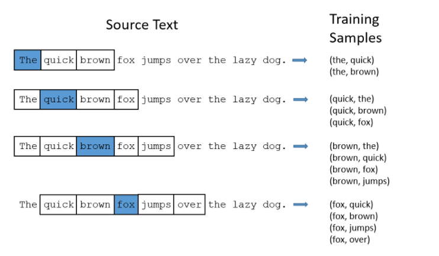

第 6 章 循环神经网络
最大的特点就是有记忆缓存功能。把过去输入内容产生的远期影响量化后与当前输入的内容一起反应到网络中参与模型。它是一类处理序列数据的神经网络。
6.1 循环神经网络(RNN)
循环神经网络是一类处理序列化数据的神经网络。例如，我们要预测句子中的下一个单词是什么？需要联系句子中前面单词的意思，因为句子中的单词并不是独立的，传统的神经网络(全连接神经网络)和卷积神经网络模型中，网络从输入层到隐藏层最后到输出层，层与层之间是全连接或者部分连接，但是每层之间节点是无连接的。传统的神经网络有很多问题不能解决，循环神经网络隐藏层节点之间是相互连接的。具体表现在，循环神经网络会记住之前的信息，并应用于当前的计算中1.
之所以称之为循环神经网络，主要是它针对系列中的每一个元素都执行相同的操作，每一个操作都依赖于之前的计算结果。图 6.1 展示了循环神经网络计算过程。

图 6.1: 循环神经网络
其中，
\(x_t\) : \(t\) 时刻输入，如 \(x_t\) 可以是某一个句子中的 one-hot 编码；
\(s_t\) : 对应 \(t\) 时刻的有隐藏状态，是网络的记忆单元， \(s_t\) 通过前面的隐藏状态和当前时刻的输入得到；
\[\begin{equation} s_t = f(W s_{t-1} + U x_t) \tag{6.1} \end{equation}\]
- \(o_t\) : \(t\) 时刻的输出，如果想要预测句子中的下一个单词，那么它是包含词表中每一词的概率向量。
\[\begin{equation} o_t = g(V s_t) \tag{6.2} \end{equation}\]
\[\begin{align} o_t &= g(V s_t) \\ &= g(V f(U x_t + W s_{t-1})) \\ &= g(V f(U x_t + W f(U x_{t-1} + Ws_{t-2}))) \\ &= \cdots \tag{6.3} \end{align}\]
图 6.2: 循环神经网络的前向传播的计算过程示例图
6.1.1 循环神经网络的训练
BPTT，具体可参考下面两篇博客:
理论上，循环神经网络支持任意长度的序列，但是实际上，序列过长,会出现梯度消散问题。实际中档序列超过一定的长度时，会进行截断。
问题:
- RNN 中为什么要采用 tanh 而不是 ReLu 作为激活函数?
RNN 的主要问题是梯度消失(在反向传播分层训练[Back Propagation]的过程中本应用于修正模型参数的误差随着层数的增加指数递减,导致了模型训练的效率低下).为了保持激活函数线性区域中的梯度,我们需要一个函数,其二阶导数可以在零点之前持续很长的范围.而 tanh 可以将所有值映射到-1至1之间,在利用梯度下降算法调优时利用链式法则,会造成很多个小于1的项连乘就很快的逼近零.
RNN 在处理长期依赖序列时,由于距离较远节点时会涉及多次雅各比矩阵多次相乘,会出现梯度消失或者梯度爆破的问题, 为了解决这个问题,人们提出很多解决问题的方法.例如 ESN (Echo State Network),增加有漏单元 (Leaky Units), 门限 RNN (Gated RNN).
6.2 长短时记忆网络(LSTM)
LSTM的主要思想是采用一个叫做细胞状态 (state)的通道来贯穿整个时间序列.通过精心设计门的结构来去除或增加信息到细胞状态的能力.门是一种让信息选择式通过的方法.它包含一个 sigmoid 神经网络层和一个按位乘法操作.详细步骤可参考
6.3 Word2Vec
Word2Vec 是 Google 于 2013 年开源推出用于获取词向量的工具包。所谓的“词向量”，就是将自然语言中的字词转为计算机可以理解的稠密向量（Dense Vector）。在 word2vec 出现之前，自然语言处理经常把字词转为离散的单独的符号，也就是 One-Hot Encoder
\[\begin{align} 杭\quad州 \qquad [0,0,0,0,0,0,0,1,0,...,0,0,0,0,0,0,0] \\ 上\quad海 \qquad [0,0,0,0,1,0,0,0,0,...,0,0,0,0,0,0,0] \\ 宁\quad波 \qquad [0,0,0,1,0,0,0,0,0,...,0,0,0,0,0,0,0] \\ 北\quad京 \qquad [0,0,0,0,0,0,0,0,0,...,1,0,0,0,0,0,0] \\ \end{align}\]
在语料库中，杭州、上海、宁波、北京各对应一个向量，向量中只有一个值为1，其余都为0。但是使用 One-Hot Encoder 有以下问题:
城市编码是随机的，向量之间相互独立，看不出城市之间可能存在的关联关系；
向量维度的大小取决于语料库中字词的多少。语料库越大，那么维度就越高；
如果将其表示成一个矩阵，这个矩阵过于稀疏，将会造成维数灾问题。
Word2Vec 可以将 One-Hot Encoder 转化为低维度的连续值，也就是稠密向量，并且其中意思相近的词将被映射到向量空间中相近的位置。比如将上面的城市映射到下面的向量：
\[\begin{align} 杭\quad州 \qquad [0.12 , 1.1 , 2.2 , 3.2] \\ 上\quad海 \qquad [0.15 , 1.2 , 2.4 , 3.5] \\ 宁\quad波 \qquad [0.10 , 1.0 , 2.3 , 3.3] \\ 北\quad京 \qquad [0.50 , 2.1 , 2.5 , 3.0] \\ \end{align}\]
这种编码的好处大致有下面几点：
- 向量中每一个元素的值不再只能是0或1，而是可以为任意实数；
- 向量的维度不再和词库的大小有关，而是可以是预先设置的维度，比如说100维；
- 向量与向量之间的距离是有意义的，经常同时出现的词，在向量空间的中距离大致会小于那些不经常同时出现的词。
word2vec 含有两种比较重要的模型，即 CBOW（Continuous Bag of Words）和 Skip-Gram 。如下图 6.33。
图 6.3: CBOW 和 Skip-gram
对于 CBOW 和 Skip-Gram ，word2Vec 给出了两套框架。具体详见 word2vec 中的数学原理
6.3.1 CBOW
作用：根据当前单词的上下文预测当前单词
图 6.4: 一个上下文的情况对一个单词预测CBOW
输入层: 传统的 One-Hot Encoder
隐藏层: 编码后的词向量空间（V>>N）
输出层: 对每一个单词的预测概率

- 隐藏层
假如我们学习有关词向量的 300 个特征（词性、语义），那么隐藏层的结构将会表示成一个矩阵 : 1000 行（代表词汇表中的每一个单词）和 300 列（代表每一个隐藏层的神经元）。如下：

模型中的隐藏层其实运作为一个单词查找表。
- 输出层
下图 6.5 为多个上下文的情况对一个单词预测 CBOW 模型结构图
图 6.5: 多个上下文的情况对一个单词预测CBOW
从输入层（Input layer）到隐藏层（Hidden layer），每一上下文用于转换的矩阵都是一样的，也即他们公用一个查询表格（Lookup table），对于每个上下文得到的隐藏层的表达，直接用其均值作为后续计算。
6.3.2 Skip-Gram
作用：从当前单词预测上下文。
图 6.6: skipgram

http://www.cnblogs.com/pinard/p/7160330.html https://github.com/tmikolov/word2vec